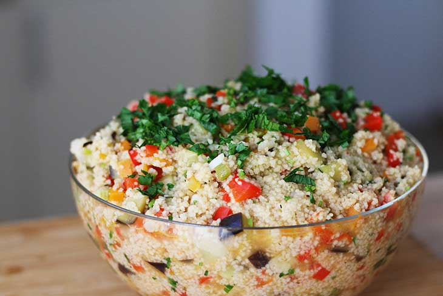

Salata de cuscus

INGREDIENTE
200g cuscus
400ml apa
1 ardei gras rosu, tocat
1 morcov, tocat
1 castravete, tocat
1 rosie, tocata
1 vanata mica, tocat
1 ceapa, tocata
5 linguri masline feliate
patrunjel proaspat, tocat
ulei de masline, dupa gust
sare si piper, dupa gust
boia dulce afumata, dupa gust (optional, dar eu va recomand)
MOD DE PREPARARE
Incinge ulei intr-o tigaie mare.
Adauga toate legumele, cu exceptia rosiilor, maslinelor si a castravetelui.
Adauga sare si piper si soteaza-le timp de 5 minute.
Adauga cuscus si apa. Acopera tigaia, apoi lasa sa fiarba pana cand toata apa a fost absorbita si continutul devine pufos.
Opreste focul, apoi adauga rosiile tocate, castravetele, maslinele si patrunjelul proaspat, tocat. Adauga ulei de masline dupa gust si amesteca.
Eu prefer sa servesc aceasta salata de cuscus rece, insa o poti manca si cat este calda.
Pofta buna!